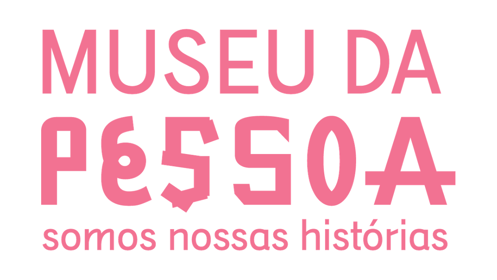
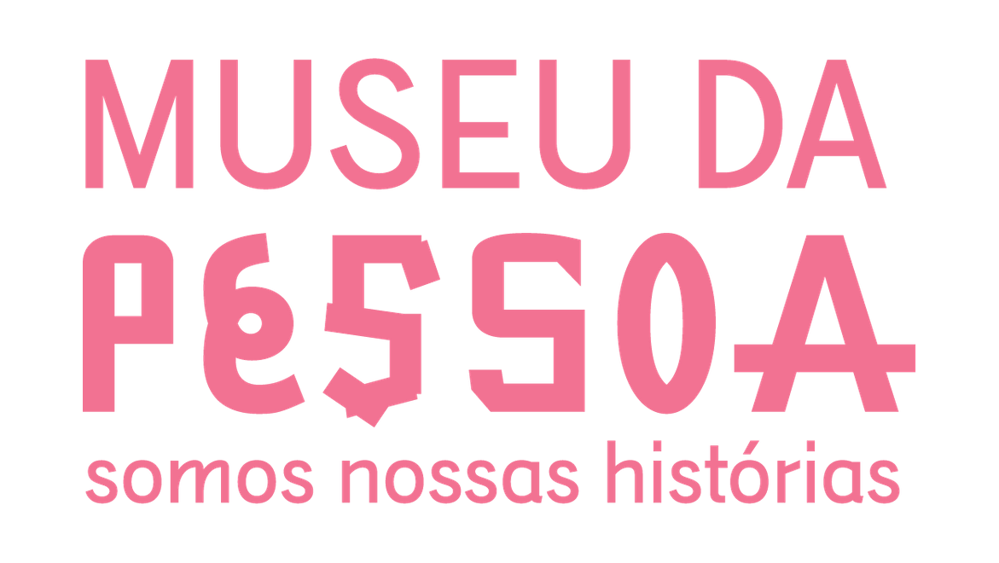

quero ser núcleo

quero ser núcleo
A história de vida de cada pessoa é única, tem valor e merece ser preservada e conhecida. Ao registrar e compartilhar histórias de vida, valorizamos as experiências e saberes de todos.
Desenvolvidos em 2020, os Núcleos Museo da Pessoa são iniciativas autônomas, que se apropriam das ferramentas colaborativas de mobilização e engajamento comunitário, sistematizadas pelo Museu da Pessoa, em projeto de memória.